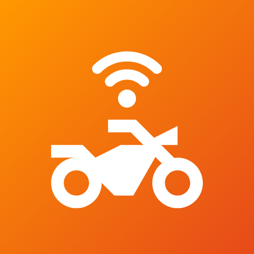

BikersThrillPrivacy Policy
Effective 17 October 2026 · BikersThrill (com.satya.biker) by Satya Digital · Contact: support.satyadigital@gmail.com
BikersThrill helps motorcycle riders ride in groups safely: verified riders, live location sharing during rides, group chat, SOS alerts and crash detection. This policy explains what we collect, why, who can see it and how to delete it.
1. Who can use BikersThrill
The app is for riders aged 18 and over. Every account is checked by our admin team before it can use groups, rides, location sharing or SOS.
2. What we collect and why
| Data | Why we need it |
|---|---|
| Email address and sign-in (email/password or Google) | To create and secure your account. |
| Name, mobile number, date of birth, gender, address, city, state, PIN code | Rider verification; shown to admins. Name and phone are shown to your group members so they can reach you. |
| ID type and number, driving-licence number and expiry | To verify that you are a real, licensed rider. Visible to admins only. |
| Photos of your ID card, driving licence and a selfie | Identity verification by our admins. Never shown to other riders. |
| Bike make, model and registration number; riding experience | Shown on your profile and to your group; included in SOS alerts. |
| Blood group and optional medical notes | Included in SOS alerts so helpers can act quickly. |
| Emergency contacts (name, relation, phone) | So the app can prepare an SOS text message to them. We never contact them ourselves. |
| Precise location | Only while you have a ride running, when you send an SOS, or when you choose to share your location. Shared with members of your groups. The app does not track you in the background when no ride is running. |
| Speed and battery level during a ride | Shown to your group so the ride captain can keep everyone together. |
| Motion sensor readings | Crash detection runs on your phone only. Sensor readings are never uploaded. |
| Group chat messages, rides you create or join | To provide group and ride features. |
| Push-notification token | To deliver SOS and group notifications. |
| App usage and diagnostics (Firebase Analytics) | To understand which features are used and fix problems. No advertising. |
3. Who can see your data
- Admins of BikersThrill can see all profile details and verification photos to approve, reject or suspend accounts.
- Members of your groups see your name, phone, bike, blood group, chat messages and – while you share it – your live location, speed and battery. SOS alerts go to all your groups.
- Other verified riders can see public rides you create (title, route, time and your name).
- Your emergency contacts receive an SOS text only if you send it from your SMS app.
- Service providers: data is stored and processed by Google Firebase (Authentication, Cloud Firestore, Cloud Messaging, Analytics) under Google's data-processing terms. Maps are drawn with OpenStreetMap tiles, which receive the map area being viewed but no account data.
We do not sell your data, use it for advertising, or share it with anyone else unless the law requires it.
4. Security
All data is encrypted in transit (HTTPS/TLS) and at rest by Google Cloud. Access is enforced by server-side security rules: riders can read only their own profile, verification photos are readable only by the rider and admins, and group data only by approved riders.
5. How long we keep data
We keep your data while your account exists. When you delete your account we delete your profile, verification photos, live location, SOS alerts and rides you created straight away; backups are overwritten within 30 days. Messages you posted in group chats remain visible to that group.
6. Your choices and rights
- Edit your bike and emergency details any time in Profile.
- Stop location sharing by ending your ride; turn off crash detection and SMS in Safety settings.
- Delete your account in the app (Profile → Delete account) or see how to delete your account.
- Ask us for a copy of your data or a correction by emailing support.satyadigital@gmail.com.
7. Permissions the app asks for
- Location – live ride tracking, SOS location and finding help nearby.
- Notifications – SOS alerts, ride tracking status, verification updates.
- Camera (through the system camera) – to photograph your ID, licence and selfie.
- Full-screen alerts – to show the crash countdown over the lock screen.
8. Changes
If we change this policy we will update this page and the effective date, and tell you in the app for important changes.
9. Contact
Satya Digital – support.satyadigital@gmail.com